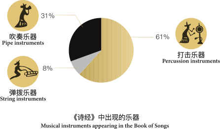

《吕氏春秋·大乐篇》中说：“音乐之所由来者远矣。”远至何时，史无记载。而乐器作为远古人们表达内心情感和需求的最重要的载体，最早可追溯到8000多年前。湘潭地区出土的青铜乐器，反映了商周文化南播过程中与本地文化的交流与融合。
《诗经》中的乐器可按演奏方法分为打击乐器：钟、鼓、癰、缶、癭、磬、雅、南、贲、镛、应、田、癲、癮、圉、钲；弹拨乐器：琴、瑟；吹奏乐器：癥、簧、笙、埙、篪、癱、箫、管。
古青铜乐器大致可分铙、钲、句鑃、铎、铃、钟和鼓等七类。古代乐器按用途可分为祭祀、宴会、举行典礼时使用和军队中使用。但这只是大致的分类，因象钟、鼓既是宴飨中的乐器，也用于军队。古青铜乐器大致可分铙、钲、句鑃、铎、铃、钟和鼓等七类。
钟是先秦乐礼表现的扛鼎之器，《古今乐录》云：“凡金为乐器者六，皆钟之类也：曰钟、曰、曰錞、曰镯、曰铙、曰铎。”湖南省是出土南方铜铙和甬钟最集中的地方。
1972 年至 1973 年间，湖南长沙马王堆汉墓被发掘，出土了 3000 多件珍贵文物和一具完好如初的女尸而闻名天下。其中的1、3号汉墓出土了一重要音乐文物，仅乐器类文物就有7种38件，附件6种9件。